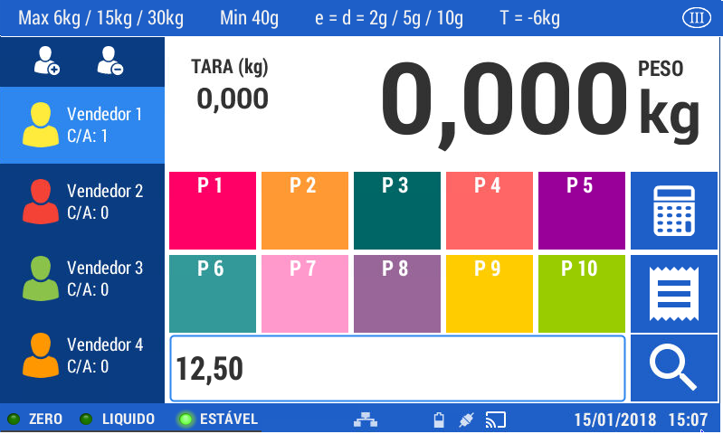
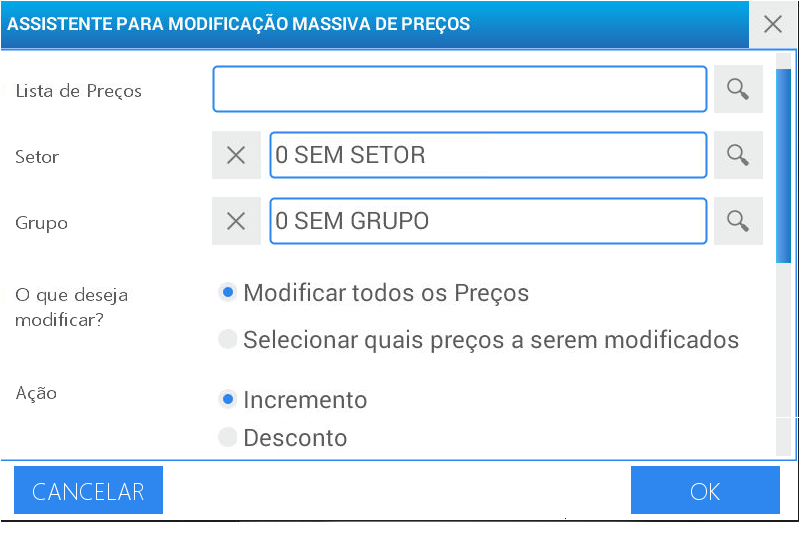
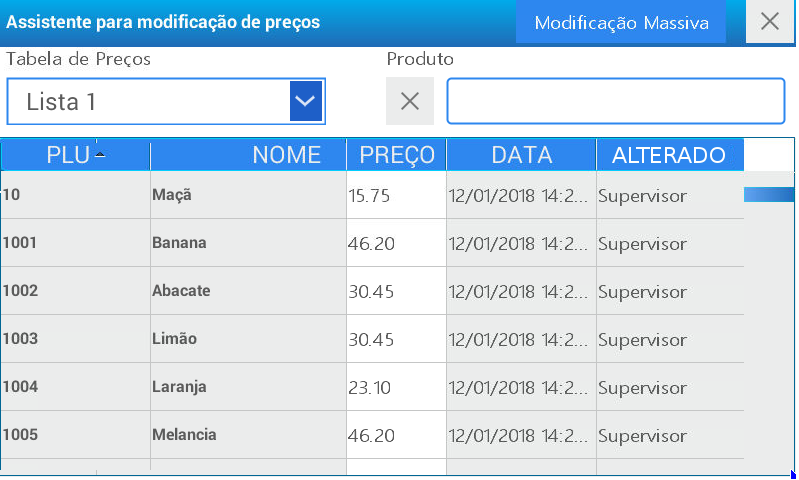
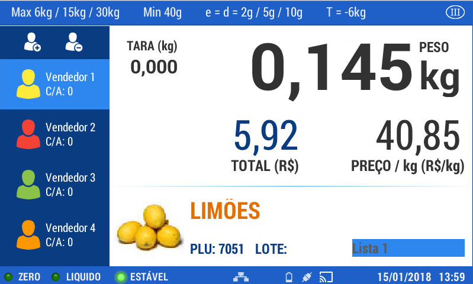
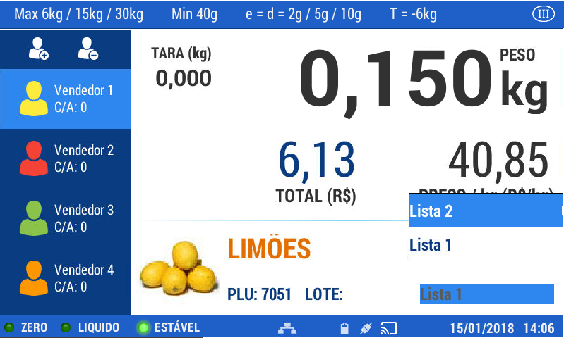
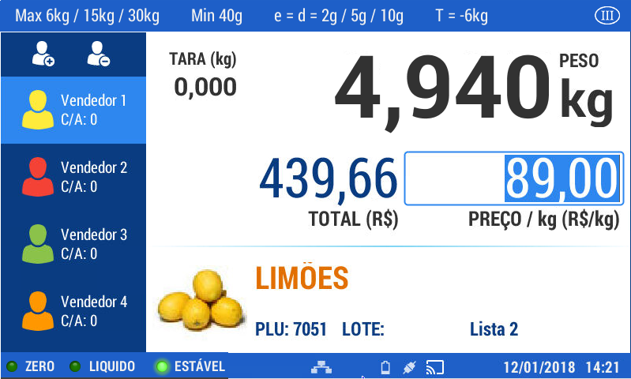
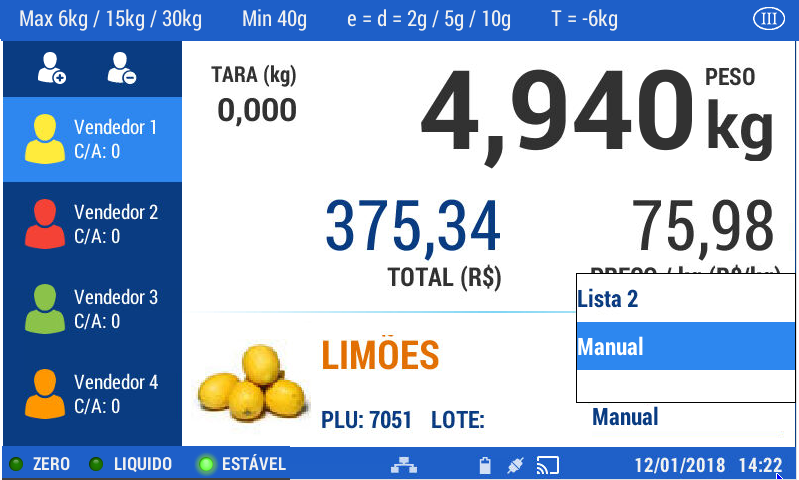
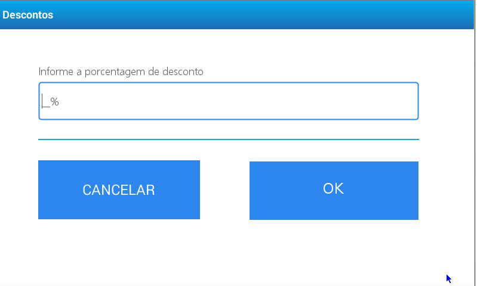
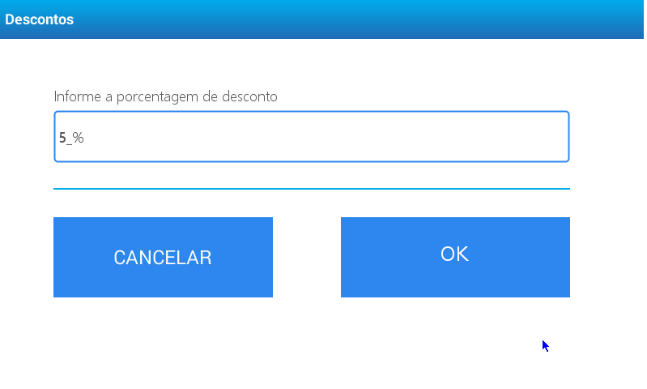
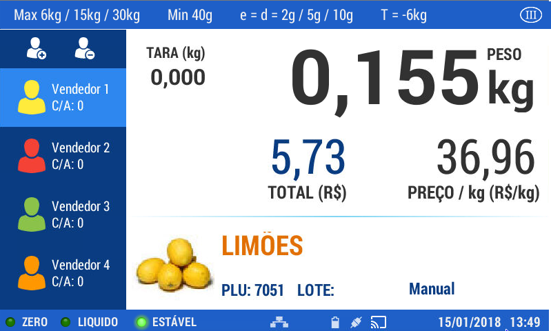

Preços
Para realizar uma venda, é necessário determinar um valor de preço. O equipamento dispõe de uma grande variedade de modos possíveis para realizar esta operação.
O preço pode ser digitado manualmente
Este procedimento é utilizado geralmente quando o produto não se encontra cadastrado na balança ou quando é necessário alterar um valor para uma situação pontual.
Insira através do teclado numérico o valor do preço desejado (com a vírgula): Exemplo 12,50

Pressione a tecla .
Em seguida pressione . Como o preço foi digitado manualmente, o equipamento não o associa à um produto cadastrado, Portanto ele será identificado como UNIDADE.
O Valor do preço pode ser definido ao cadastrar o produto
No momento do cadastro do produto, dentro das ações de configuração encontra-se a associação do valor do preço ao produto. Os procedimentos para executar esta operação é encontrado em: Programação Geral - Cadastros - Produtos
O valor do preço pode ser modificado através da lista de preços
Pressione a tecla menu , selecione o usuario e digite a senha, e clique na opção Assistente de Preços
Neste função é possível a modificação dos valores de uma lista de preços previamente cadastrada.
Selecione Modificação massiva de Preços

Selecione a lista de preços à ser modificada acessando a opção de busca
Selecione o setor
Selecione o grupo
Escolha a lista que deseja alterar: o valor de alguns produtos ou o valor de todos os produtos contidos na lista escolhida
Selecione a opção: acréscimo ou desconto
Selecione se a modificação é um valor fixo ou percentual.
Insira o valor ou a porcentagem
Pressione aceitar
Caso escolha “Selecionar quais preços modificar”, selecione os produtos sobre os quais deseja que se aplique a modificação. a seguir pressione aceitar.

Caso opte por “Modificar todos os preços” será visualizado na tela uma mensagem de confirmação da operação realizada.
Utilização de diferentes preços no mesmo produto
Ao operar um PRODUTO por meio de qualquer uma das opções detalhadas anteriormente, A balança sempre mostrará a LISTA DE PREÇOS 1 como padrão.

Caso deseje utilizar a LISTA DE PREÇOS 2, simplesmente pressione na tela o campo de lista de preços, Logo após tenha acessado o produto pelo código.

Alteração eventual de preço para um produto de forma manual
Caso necessite realizar uma alteração de preço do produto de forma imediata no momento da venda, após inserido o produto à operar, e aparecer as informações do mesmo na tela, pressione a tecla

Digite no teclado numérico o valor do produto
Pressione
O valor do preço e total serão alterados.
No campo de lista de preços será visualizada a palavra “Manual”

Pressione novamente para fazer a venda.
Produto com preço aberto
Caso o produto seja cadastrado na lista com preço aberto (Preço = 0), A balança solicita que se introduza de maneira manual o valor do preço no ato da venda. Exemplo: Se um produto estiver cadastrado LISTA DE PREÇO 2= R$ 0,00, No momento da operação do produto será mostrado o valor do preço da LISTA 1, e pressionando sobre o campo PREÇO, é permitido a alteração manual do valor por não encontrar cadastrado o preço da LISTA 2.
Porcentagem de desconto
A aplicação de um desconto sobre um produto, pode ser realizado de diversas maneiras. Uma delas é utilizar o Assistente de Preços. Através desta opção é possível conceder descontos de maneira geral ou particular e escolher o tipo de redução do valor de um produto por porcentagem ou valor.
Como aplicar um desconto de forma imediata:
Acesse o produto desejado através de seu código e pressione a tecla
Nesta opção é possível inserir o valor de desconto do produto (somente de forma porcentual).

Insira através do teclado numérico o valor percentual de desconto à conceder e pressione Aceitar

O preço será corrigido com o valor da dedução aplicada.
No campo definido para selecionar a lista de preços será exibido a palavra “Manual”.

Pressione novamente para operar uma nova venda.